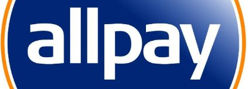

I am a Scientist and Programme Lead for "Sensor & Network Analytics" at the Institute for Infocomm Research (I2R), A*STAR, Singapore. I received my PhD degree in Electrical and Computer Engineering from the National University of Singapore.
Research Interests
Current:- Internet of things: machine learning, data analytics, trust and privacy
- Mobile crowdsensing / crowdsourcing: incentives, trust and privacy
- Wireless networks (sensor / ad hoc / cognitive radio)
- Software-defined networking (SDN)
Selected Recent Publications
[Complete list of publications (illustrations available)]
- [GLOBECOM'17] Reshaping mobile crowd sensing using cross validation to improve data credibility [DOI: 10.1109/GLOCOM.2017.8255050] [slides]
T. Luo and L. Zeynalvand
IEEE Global Communications Conference (GLOBECOM), December 2017.
With the idea of "crowd validating crowd", this paper proposes a cross validation approach, in which a validating crowd is strategically selected to validate the quality of data contributed by the contributing crowd. A five-component cross validation mechanism is designed to reshape the original crowdsensed data into a more credible posterior belief of the ground truth. - [ComMag'17] Sustainable incentives for mobile crowdsensing: Auctions, lotteries, and trust and reputation systems [DOI: 10.1109/MCOM.2017.1600746CM]
T. Luo, S. S. Kanhere, J. Huang, S. K. Das, and F. Wu
IEEE Communications Magazine, vol. 55, no. 3, pp. 68-74, March 2017.
This survey paper provides a technical overview and analysis of six incentive mechanism design frameworks, namely auction, lottery, trust and reputation system, as well as bargaining game, contract theory, and market-driven mechanism. - [TIST'16]  Incentive mechanism design for crowdsourcing: an all-pay auction approach [DOI: 10.1145/2837029]
T. Luo, S. K. Das, H-P. Tan, and L. Xia
ACM Transactions on Intelligent Systems and Technology, vol. 7, no. 3, pp. 35:1-26, February 2016.
The most common auctions used for incentive mechanism design are "winner-pay auctions", where only selected workers (i.e., winners, who will be rewarded) need to contribute (i.e., "pay" effort). On the contrary, all-pay auctions require every crowd worker to "pay" (i.e., contribute) effort regardless of whether he will be eventually rewarded. Will this actually work? - [TMC'16] Incentive mechanism design for heterogeneous crowdsourcing using all-pay contests [DOI: 10.1109/TMC.2015.2485978]
T. Luo, S. S. Kanhere, S. K. Das, and H-P. Tan
IEEE Transactions on Mobile Computing, vol. 15, no. 9, pp. 2234-2246, September 2016.
Crowd workers are often heterogeneous, in the sense that not only their "types" (abilities, costs, etc.) are different, but the "beliefs" (distributional knowledge) about their types are also different. While this is a better (closer) model of the reality, it is more challenging to design corresponding incentive mechanisms. This paper addresses this challenge using an asymmetric all-pay auction augmented with a prize tuple. Moreover, we discover an interesting property of the incentive mechanism, called strategy autonomy, where each worker chooses a strategy with no need of worrying (reasoning) about what others will choose! - [INFOCOM'15] Crowdsourcing with Tullock contests: A new perspective [DOI: 10.1109/INFOCOM.2015.7218641]
T. Luo, S. S. Kanhere, H-P. Tan, F. Wu, and H. Wu
The 34th IEEE International Conference on Computer Communications (INFOCOM), April 2015, pp. 2515-2523.
Acceptance rate: 19%
Best Paper Award nominee
What is a Tullock contest? Think it as a lucky draw! While auctions have dominated the realm of mechanism design for decades, this paper suggests Tullock contests as an alternative mechanism that is more appealing to "ordinary" participants. Tullock contests distinguish themselves from auctions in being imperfectly discriminating: "You always have a chance to win, no matter how 'weak' you are." This feature is particularly desirable for, e.g., large-scale crowdsensing. - [TMC'15] Quality of contributed service and market equilibrium for participatory sensing [DOI: 10.1109/TMC.2014.2330302]
C-K. Tham and T. Luo
IEEE Transactions on Mobile Computing, vol. 14, no. 4, pp. 829-842, April 2015.
In order to characterize QoS for crowdsensing, this work proposes a metric called Quality of Contributed Service (QCS) which aggregates individual quality of contributions and takes into account information quality and time sensitivity. QCS is then analyzed using a market based supply-and-demand model. - [COMNET'14] Fairness and social welfare in service allocation schemes for participatory sensing [DOI: 10.1016/j.comnet.2014.07.013]
C-K. Tham and T. Luo
Computer Networks, Elsevier, vol. 73, pp. 58-71, November 2014.
Instead of using monetary or reputation-based reward, this paper proposes a resource-allocation approach to incentivize crowdsensing. Specifically, it allocates each user some "service quota" based on the amount of contribution the user makes. A typical applicable scenario is a platform that uses crowdsensed data to provide some information service (transport, air quality, healthcare, etc.). - [MASS'14] Optimal prizes for all-pay contests in heterogeneous crowdsourcing [DOI: 10.1109/MASS.2014.66] [Extended work: TMC'16]
T. Luo, S. Kanhere, S. Das, and H-P. Tan
The 11th IEEE International Conference on Mobile Ad-hoc and Sensor Systems (MASS), October 2014, pp. 136-144.
Acceptance rate: 26.5% (48 out of 181) - [SECON'14] SEW-ing a Simple Endorsement Web to incentivize trustworthy participatory sensing [DOI: 10.1109/SAHCN.2014.6990404]
T. Luo, S. Kanhere, and H-P. Tan
The 11th IEEE International Conference on Sensing, Communication, and Networking (SECON), July 2014, pp. 636-644.
Acceptance rate: 28.6% (67 out of 234)
This work takes a social-network perspective to connect participants into an endorsement-based social network. It proposes and explores "nepotism"---a tradeoff between selfishness and altruism---to both incentivize participation and improve trustworthiness for crowdsensing.
[SEW has been implemented in two mobile crowdsensing smartphone apps called imReporter and FoodPriceSG. Find the links below in "Systems Work".] - [INFOCOM'14] Profit-maximizing incentive for participatory sensing [Much Enhanced Version: ACM TIST'16]
T. Luo, H-P. Tan, and L. Xia
The 33rd IEEE International Conference on Computer Communications (INFOCOM), April 2014, pp. 127-135.
Acceptance rate: 19% (319 out of 1650)
[Complete list of publications (illustrations available)]
Systems Work
Besides theory, I also have keen interest in the actual development of real systems. The below are three mobile crowdsourcing/crowdsening systems developed by my team, all available for download at Apple Store and Google Play:
Related Publications:
- VoteNet. I2R-A*STAR Technology Disclosure, filed in 2017.
- [This paper describes the incentive engine used by imReporter & FoodPriceSG.] ---
T. Luo, S. Kanhere, and H-P. Tan, "SEW-ing a Simple Endorsement Web to incentivize trustworthy participatory sensing," IEEE 11th International Conference on Sensing, Communication, and Networking (SECON), July 2014. [pdf]
- [This paper summarizes the WiFi-Scout system and an incentive scheme it uses.] --- F-J. Wu and T. Luo, "WiFiScout: A crowdsensing WiFi advisory system with gamification-based incentive," IEEE 11th International Conference on Mobile Ad Hoc and Sensor Systems (MASS), October 2014. [pdf]
Tutorial & Invited Talks
- Sun Yat-sen University, China, "Building Internet of Things and smart cities via mobile crowd sensing", December 2016.
- Xiamen University, China, "Empowering smart cities and the Internet of Things: A mobile crowdsensing perspective", December 2016.
- IEEE ICC 2016 Tutorial, "Mobile crowdsourcing: Incentives, Trust, and Privacy", May 2016. [slides]
- Chinese University of Hong Kong, Hong Kong, "Incentive mechanism design and trust systems for crowdsourcing", May 2015.
- Singapore University of Technology and Design, Singapore, "Incentives and trustworthiness in crowdsourcing", December 2014.
- University of Electronic Science and Technology of China, "Incentivizing trustworthy human-centric systems", April 2014.
- University of Melbourne, Australia, "Incentives and QoS in participatory sensing", March 2012.
Professional Activities
- TPC Co-Chair:
IEEE PerCom CASPer 2016
ACM ComNet-IoT 2016
IEEE ISSNIP 2014 Symposium on Participatory Sensing & Crowdsourcing - Editorial Board:
Guest Editor, Special Issue on "Big data management and analytics for mobile crowd sensing", Mobile Information Systems, 2015 - 2016. [Editorial in PDF]
Guest Editor, Special Issue on "MAC Protocols in Wireless Sensor Networks", Journal of Sensor and Actuator Networks, 2015 - 2016 - Organizing Committee:
IEEE ISSNIP 2015
IEEE ISSNIP 2014 - Program Committee:
2018: INFOCOM | WOWMOM | ICCCN | PerCom CASPer | ComNet-IoT | PST (Privacy, Security and Trust)
2017: DCOSS | PerCom CASPer | UIC (Ubiquitous Intelligence and Computing)
2016: WCNC | MobiSPC | AAMAS Trust | PST | BIH (Brain Informatics and Health)
2015: WCNC | MobiSPC | SenseApp | ICCVE | CCBD (Cloud Computing and Big Data) | IBDC (Big Data in Crowdsensing)
2014: WCNC | SenseApp | ICCVE | IOV (Internet of Vehicles)
2013: WCNC | SenseApp | ICCVE | AMI (Ambient Intelligence) | IoT-SC (IoT for Smart Cities)
2012: ICCVE | KICSS (Knowledge, Information and Creativity Support Systems) - Journal reviewer:
IEEE/ACM Transactions on Networking (ToN)
IEEE Transactions on Mobile Computing (TMC)
IEEE Journal on Selected Areas in Communications (JSAC)
IEEE Transactions on Cognitive Communications and Networking (TCCN)
IEEE Transactions on Wireless Communications (TWC)
IEEE Transactions on Vehicular Technology (TVT)
IEEE Transactions on Network and Service Management (TNSM)
IEEE Computer
IEEE Network
IEEE Pervasive Computing
ACM Mobile Computing and Communications Review (MC2R)
Elsevier - Pervasive and Mobile Computing (PMC)
Elsevier - Ad Hoc Networks (ADHOC)
Elsevier - Computer Networks (COMNET)
Elsevier - Computer Communications (COMCOM)
MDPI (Basel): Sensors
IEICE Transactions on Fundamentals - Conference reviewer (non-TPC):
Globecom 2017, ICDM 2016, KDD 2015, MASS 2014, ICC 2013, Globecom 2012, DySPAN 2010, INFOCOM 2009, SECON 2009, Globecom 2009, ICC 2009, INFOCOM 2008, SECON 2008, MASS 2008, ICDCS 2008, Globecom 2008, MobiCom 2007, MSWiM 2007, MSWiM 2006... (full list)
Miscellaneous
-
How to do (good) research: [2004 version] [1995 version] (by courtesy of Bundy, Boulay, Howe, and Plotkin)
Conference statistics (acceptance rate etc.): [Theoretical Computer Science] [Networking] [CI/AI/ML/DM]
Top conferences (unofficial ranking): [Machine Learning & Artificial Intelligence] [Computer Networks & Communications]
Top journals with impact factor (unofficial ranking): [Machine Learning & Artificial Intelligence] [Computer Networks & Communications]
Permanent link to this website: purl.org/tluo
My Google Scholar profile
My DBLP profile
I2R Intranet (VPN) (staff only)
I2R webmail (Office 365) (staff only)